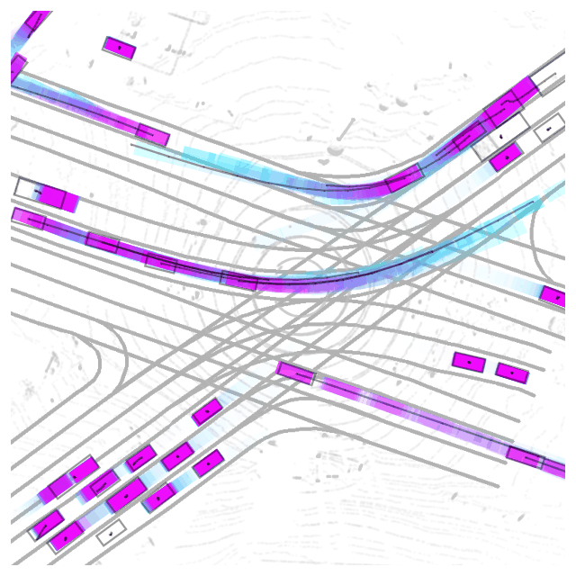
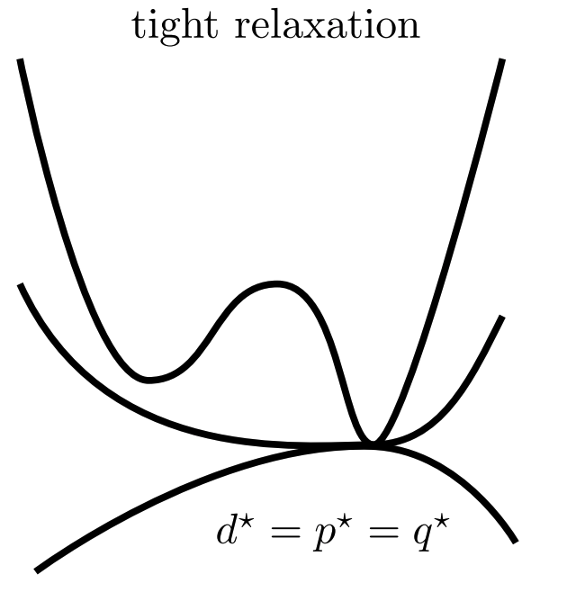
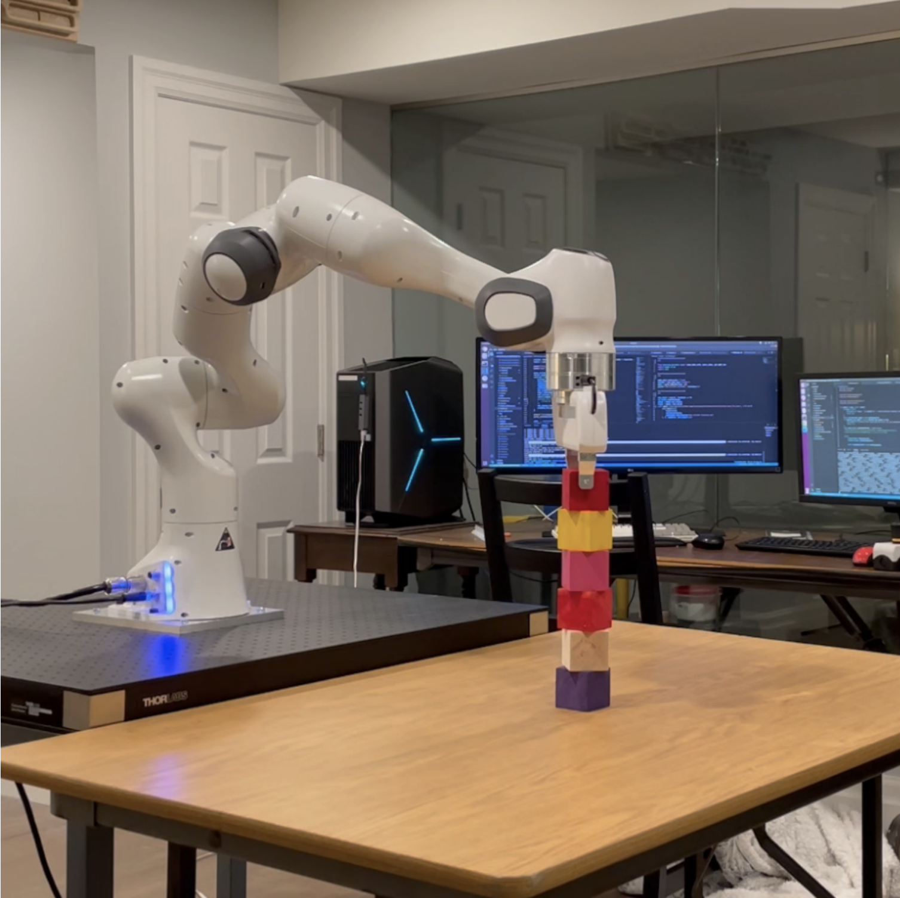
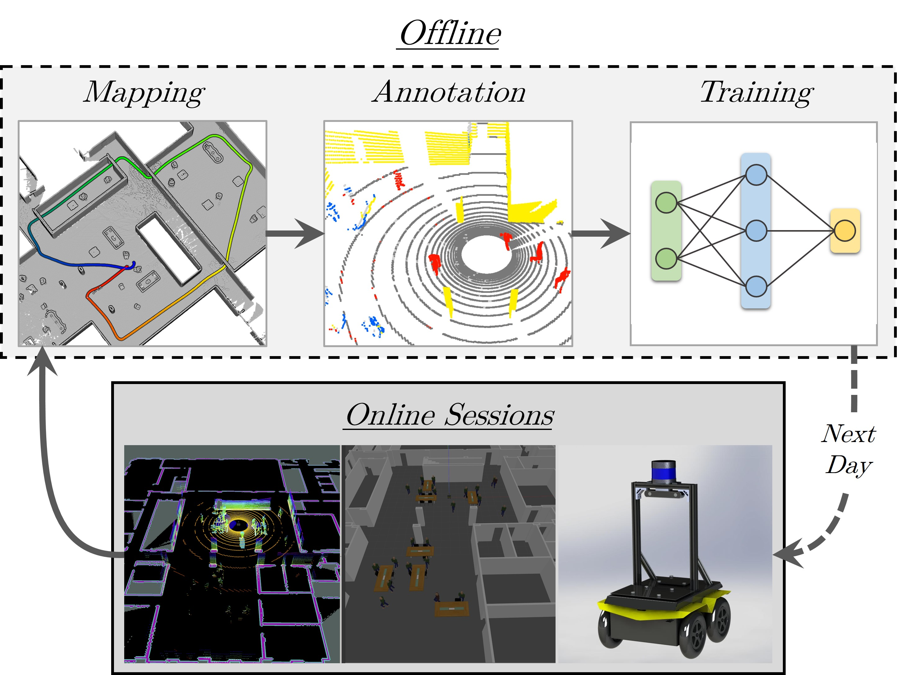
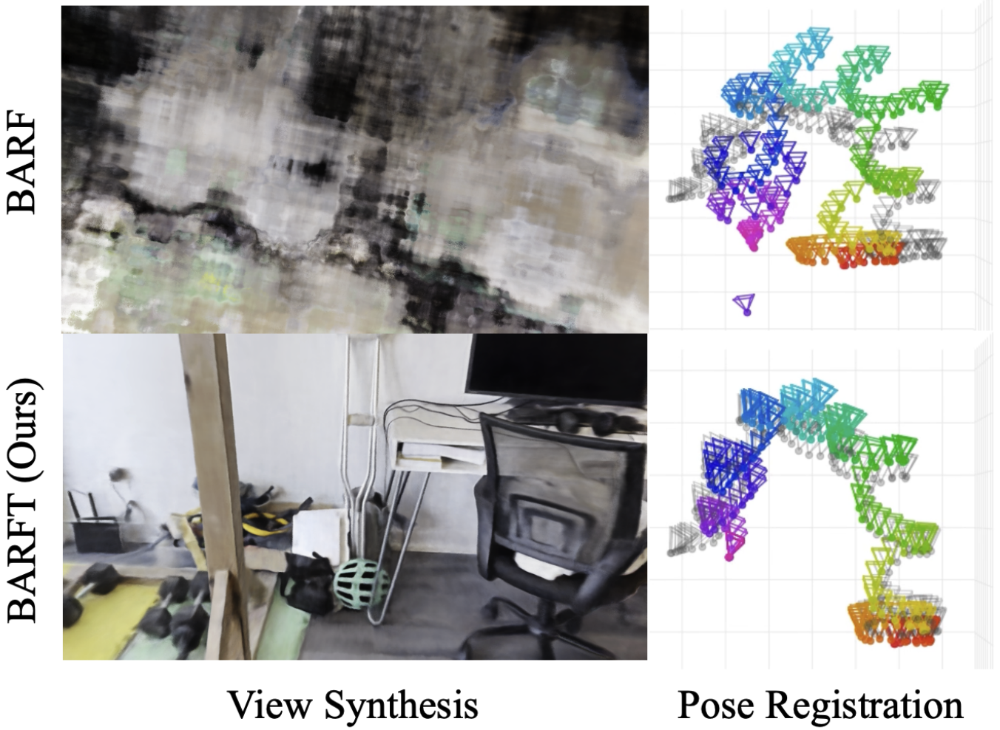
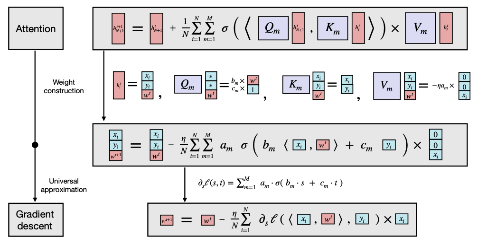
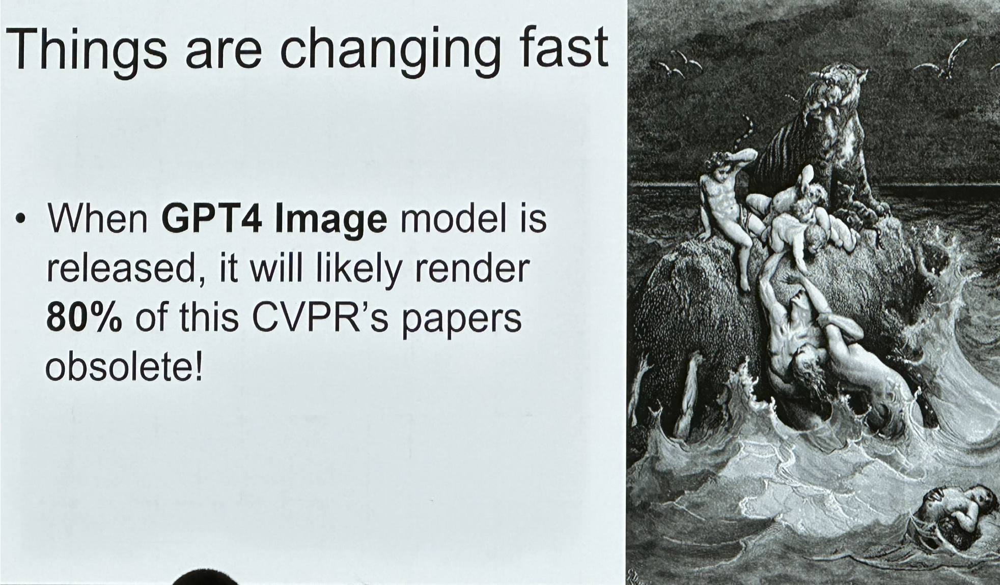
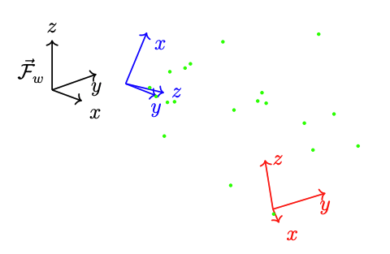

Ben Agro
Welcome to my website! My interests are real-world robotics and understanding (machine) intelligence. I have been a high-level rock climber for the majority of my life.
Experience
I am a researcher at Waabi working on next-generation autonomy
systems under Raquel Urtasun (who is also my PhD supervisor).
I was a research intern at the Robotics Vision and Learning
Lab supervised by Florian Shkurti.
We were working on learning methods for task and motion planning, and I developed a new algorithm
for PDDLStream that learned-task specific
heuristics for expanding the space of possible robot actions.

I was a research intern at the Autonomous Space and
Robotics Lab supervised by Tim Barfoot.
We worked on self-supervised semantic LiDAR segmentation for autonomous navigation. I developed a
simulation of a complex indoor environment complete with dynamic actors and an
augmented navigation stack used to train and evaluate our method.
Publications

Previous works perform object detection and trajectory forecasting through cascading modules. We reformulate
this as a single unified trajectory refinement task, which removes the problem of compounding errors.
To fulfill this task, we propose a flexible transformer refinement archiecture that is easily extensible to
alternative input modalities and tasks.
We introduce a foundation model for the physical world that learns to perceive and forecast
4D (spatio-temporal) occupancy fields with self-supervision from LiDAR data. We show
that this model can be transfered to a variety of downstream tasks, such as LiDAR forecasting
and semantic birds eye view occupancy forecasting.
We came first in the CVPR 2024 Argoverse 2 LiDAR 4D Occupancy Challenge.

During my undergraduate thesis, I spent much time
trying to find redundant constraints to
tightenan optimization problem such that it was globally optimal. Finding these redundant constraints was time-consuming and tedious. This paper presents an automated method for finding redundant constraints for optimization problems.
A new approach to perception and motion-forcasting for self-driving vehicles using
a neural network to implicitly represent future occupancy and flow directly
from sensor data.

Presents a new algorithm for PDDLStream that uses
a graph neural network to search for geometrically feasible plans in a "best first" manner.

A self-supervised learning approach for semantic segmentation of LiDAR over repeated navigation
sessions.
Personal Projects

A framework for training NeRFs with unknown (learned) camera poses.

This report distills the key ideas behind the paper Transformers as Statisticians: Provable In-Context Learning with In-Context Algorithm Selection.

A zero-shot video retrieval system leveraging open-source Vision-Language models.

This is my undergrad thesis for Engineering Science at UofT under Prof. Tim Barfoot.
We investigated how to make the problem of stereo localization (determining
the pose of a stereo camera with respect to observed landmarks) globally optimal.

I built and programmed an autonomous drone with reliable onboard SLAM and vision-only obstacle
avoidance.
The simulator I built for this project is here.

I programmed a version of the popular game Geometry Dash
that runs on the original Gameboy hardware.
Climbing
I love bouldering, and my focus is on sending hard boulders outdoors. My
current goal is to send V13 V14.
Here is some of my climbing related media:
- Red Rock (Winter 2023) Video from my first trip to Red Rock.
- Squamish (Summer 2022): Video from my first real outdoor climbing trip. Highlights include sending The Summoning (V12) and Room Service (V12).
- Climbing Training: Playlist of videos (mainly board climbing) from my climbing training.
- Sendage: List of my outdoor sends.
- Instagram: My Instagram has lots of older videos of me climbing.
News
- June 20, 2023: I'll be at CVPR2024 to present UnO!
- June 20, 2023: I'll be at CVPR2023 to present ImplicitO!
- June 12, 2023: Top U of T undergraduate Ben Agro is taking his passion for research into a direct-entry PhD.